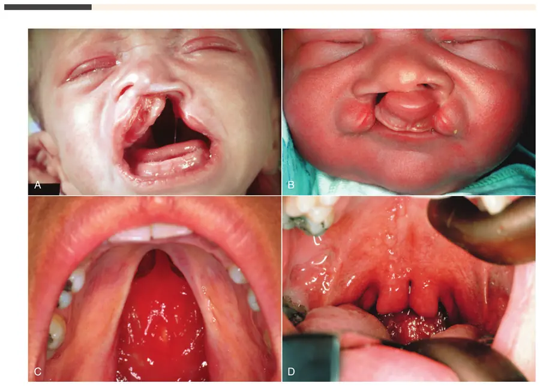
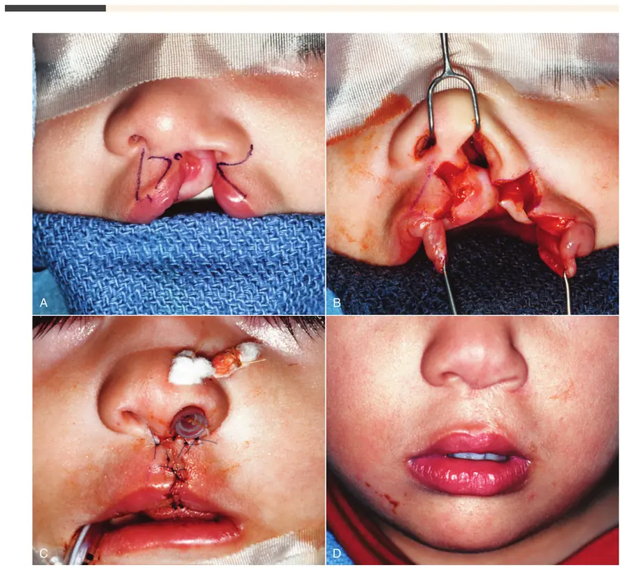

نسخه استخراجشده؛ ترجمه یا تأیید علمی انجام نشده است. وضعیت: captured
شیوع: بروز شکافهای دهانی در ایالات متحده، ۱ در هر ۷۰۰ تولد برآورد شده است.

و ترجیحهای نژادی و جنسی:
و طرفی بودن: سهچهارم شکافها ناهنجاریهای یکطرفهاند و یکچهارم دوطرفه. و وقتی نقص یکطرفه باشد، سمت چپ بیشتر از راست درگیر است.
و محلهای شایع: شکافهای دهانی معمولاً لب، ریج آلوئولار، و کام سخت و نرم را درگیر میکنند.
و علت: علل شکاف صورتی بهطور گسترده بررسی شدهاند، ولی علت دقیق شکاف در بیشتر موارد ناشناخته است.
و دربارهی برخورد با والدین — پیام روشن است: تولد نوزادی با شکاف، شوک بزرگی برای والدین است، و مناسبترین رویکرد به این والدین، توضیح آگاهانه و اطمینانبخشی است.
و پنج حیطهای که درمان باید به آنها بپردازد: ظاهر بیمار، تکلم، شنوایی، جویدن، و بلع.
و تیم شکاف — که معمولاً از اینها تشکیل میشود: دندانپزشک عمومی یا کودکان، ارتودنتیست، پروستودنتیست، جراح دهان و فک و صورت، جراح زیبایی، شنواییشناس، گوش و حلق و بینی، متخصص کودکان، آسیبشناس گفتار، روانشناس یا روانپزشک، و مددکار اجتماعی.
و یک نکتهی دیگر: شمار متخصصان لازم، بازتاب شمار و پیچیدگی مشکلاتی است که افراد با شکاف دهانی-صورتی با آن روبهرو میشوند.
و دندانپزشک چه نقشی دارد؟ در ادارهی نیازهای ویژهی دندانی این بیماران درگیر میشود، چون این بیماران میتوانند آنودنشیای نسبی و دندانهای اضافی داشته باشند. و مالاکلوژن معمولاً حاضر است، و درمان ارتودنتیک با یا بدون جراحی اصلاحی فک مکرراً اندیکاسیون دارد.
و دربارهی تکلم: آسیبشناسان گفتار در کمک به کودکان با ناهنجاری شکاف برای تکامل مهارتهای تلفظ طبیعی، بهخوبی آموزش دیدهاند. و یک قاعده: هرچه آموزش گفتار زودتر در زندگی آغاز شود، نتیجهی نهایی بهتر است. بیمار میتواند به چند سال مشاورهی گفتاری برای تولید تکلم قابلقبول نیاز داشته باشد.
و رابطهی شنوایی و گفتار: وقتی مشکلات شنوایی هم حاضر باشند، مشکلات گفتاری تشدید میشوند — و کاهش شنوایی در سنین اولیه بهویژه برای تکامل مهارتهای طبیعی گفتار زیانبار است.
و یک واژه که باید بشناسی: تنگ شدن مسیر در برخی افراد با شکاف کام، بهنام ستیغ یا نوار پاساوان شناخته میشود.
و یک محدودیت جدی: در شکاف اصلاحنشدهی کام نرم، عملاً ناممکن است که مکانیسمهای جبرانی، مکانیسم ولوفارنژیال رضایتبخشی تولید کنند. و متأسفانه: در کامهای نرم اصلاحشدهی جراحی هم، کفایت ولوفارنژیال همیشه با یک عمل حاصل نمیشود و اعمال ثانویه مکرراً ضروریاند.
زمانبندی ترمیم جراحی، یکی از بحثبرانگیزترین مسائل میان جراحان، آسیبشناسان گفتار، شنواییشناسان، و ارتودنتیستها بوده و هست.

و چرا وسوسهانگیز است که همهچیز را زود اصلاح کنیم؟ وسوسهانگیز است که همهی نقصها بهمحض آنکه نوزاد بتواند عمل جراحی را تحمل کند اصلاح شوند، و والدین کودک متولدشده با شکاف صورتی مسلماً همین شیوه را میخواهند.
و لب، زود اصلاح میشود: شکاف لب معمولاً در اسرع وقت اصلاح میگردد.
و «قاعدهی ده» — که بیشتر جراحان به آن پایبندند و تعیین میکند نوزادِ در غیر این صورت سالم، کِی برای جراحی آماده است:
ولی یک شرط بالاتر از این قاعده: چون اصلاح جراحی شکاف عملی انتخابی است، اگر هر وضعیت پزشکی دیگری سلامت نوزاد را بهخطر بیندازد، جراحی شکاف تا کمینه شدن خطرات پزشکی به تعویق میافتد.
و حالا مصالحهی بزرگ این درس: متأسفانه، هر مزیت ممکن برای بستن زودهنگام شکاف کام، چند عیب ممکن برای فرد در آینده دارد.
شش مزیت بستن زودهنگام نقص کام:
و دو عیب مهم بستن زودهنگام:
و همین عیب دوم است که سالها بعد، بیمار شکاف را به میز جراحی ارتوگناتیک میرساند.
کایلورافی — ترمیم لب: اصلاح جراحی ناهنجاری شکاف لب است؛ واژه از cheilo بهمعنای «لب» و rhaphy بهمعنای «اتصال با درز یا بخیه» میآید. و معمولاً نخستین عمل جراحی اصلاح ناهنجاریهای شکاف است و در اسرع وقت پزشکی ممکن انجام میشود.
و چرا لب اینقدر مهم است؟ شکاف لب بالا، عضلهی مهم اوربیکولاریس اوریس دور دهان را مختل میکند. و نبود پیوستگی این عضله به بخشهای در حال تکامل ماگزیلا اجازه میدهد بهصورت ناهماهنگ رشد کنند، بهگونهای که شکاف در آلوئول تشدید میشود.
و نتیجهی امیدبخش: بنابراین بازسازی این اسفنکتر عضلانی با ترمیم لب، اثر مساعدی بر قطعات آلوئولار در حال تکامل دارد.
و دو هدف کایلورافی:
و تکنیکهای کایلورافی: لومزوریه (برای شکاف یکطرفهی ناقص)، تنیسون، وین، و میلارد یا تکنیک چرخش-پیشروی.
پالاتورافی — ترمیم کام: معمولاً در یک عمل و گاهی در دو عمل انجام میشود. و در دو عمل، بستن کام نرم (استافیلورافی) معمولاً نخست انجام میگیرد و بستن کام سخت (اورانورافی) دوم.
و هدف اصلی ترمیم شکاف کام — که یک جملهی متعادل است: ساختن مکانیسمی توانا به تکلم و بلع، بدون تداخل معنادار با رشد بعدی ماگزیلا.